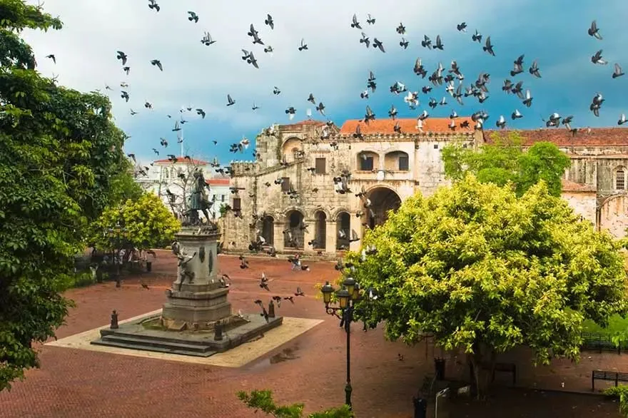
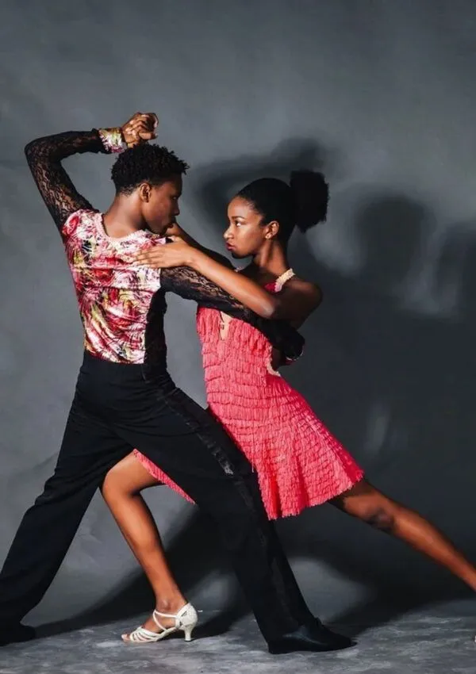
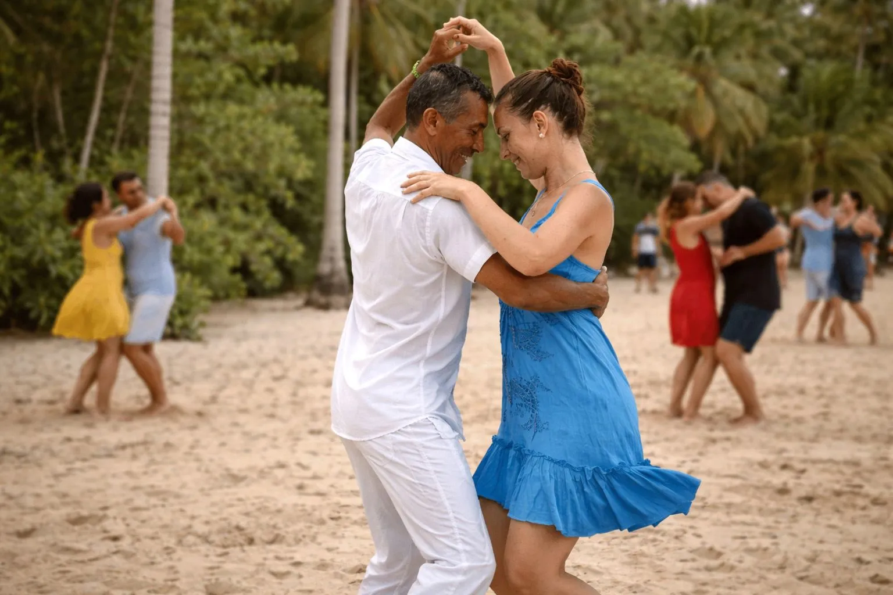
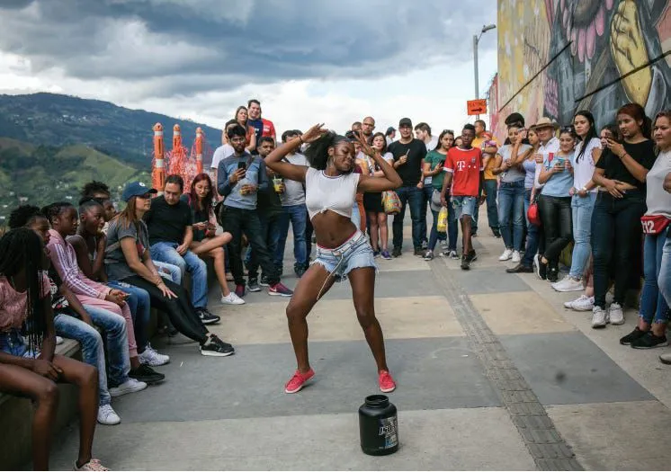

Dominican Culture
Dominican culture is a vibrant mix of music, dance, traditions, history, and Caribbean influence that makes the country unique.

Merengue
Merengue is one of the most popular music styles in the Dominican Republic. It is energetic, fast-paced, and an important part of Dominican identity.

Bachata
Bachata is a romantic music and dance style that originated in the Dominican Republic and became famous worldwide.

Dembow
Dembow in one of the dominican type of music that is more related to the young people who create music with the daily activies and the most trending things at the moment.